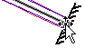
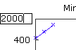
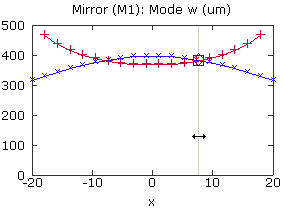

LaserCanvas 5 > Tutorials > Bow-Tie Resonator >
Part 4. Optimize Astigmatism
< Prev
Now that the Face Angle of the focusing optics is a function of variable x, we create a graph of the cavity mode on one of the cavity end mirrors. This will allow us to find the angle needed to compensate for the astigmatism introduced by the Brewster-angled crystal.
- 
Select one of the end mirrors.
-
Select menu Tools | Optic Graph, or click the Optic Graph button on the toolbar.
- 
If you do not see any lines on the graph, click near the upper limit of the Y axis and type a larger number, such as 2000. Or, edit the Y-Axis Range field in the Property Manager.

-
The graph shows the sagittal (red) and tangential (blue) spot sizes on the selected mirror, as a function of the incidence angle (x) of the curved mirrors. The actual astigmatism compensation angle will depend on your cavity spacing.
-
Note that besides the Slider in the Property Manager, you can also drag the grey line on the graph to change the value of the x variable.
< Prev